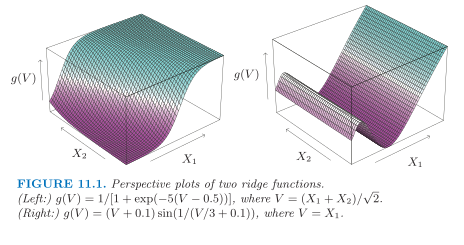

Week 11¶
Projection Pursuit Regression¶
Projection pursuit regression (PPR) is a statistical model that extends additive models. This model adapts the additive models in that it first projects the design matrix of features in the optimal direction before applying smoothing functions.
Assume we have an input vector \(X\in \mathbb{R}^p\), and a target \(Y\). Let \(\omega_m\in \in \mathbb{R}^p, m=1,2, \ldots, M\), be unit vectors of unknown parameters. The PPR model has the form
This is an additive model, but in the derived features \(V_m=\omega_m^T X\) rather than the inputs themselves. The functions \(g_m\) are unspecified and are estimated along with the directions \(\omega_m\) using some flexible smoothing method.
Ridge Functions¶
The function \(g_m\left(\omega_m\cdot X\right)\) is called a ridge function in \(\mathbb{R}^p\). It varies only in the direction defined by \(\omega_m\). The scalar variable \(V_m\) is the projection of \(X\) onto the unit vector \(\omega_m\), and we seek \(\omega_m\) so that the model fits well, hence the name "projection pursuit." Figure 11.1 shows some examples of ridge functions. In the example on the left \(\omega=(1 / \sqrt{2})(1,1)^T\), so that the function only varies in the direction \(X_1+X_2\). In the example on the right, \(\omega=(1,0)\).

The PPR model is very general, since forming nonlinear functions of linear combinations generates a surprisingly large class of models. For example, the product \(X_1 \cdot X_2\) can be written as \(\frac{1}{4}\left(\left(X_1+X_2\right)^2-\left(X_1-X_2\right)^2\right)\).
Remarkable fact: If \(M\) is taken arbitrarily large, for appropriate choice of \(g_m\) the PPR model can approximate any continuous function in \(\mathbb{R}^p\) arbitrarily well(1).
- Such a class of models is called a universal approximator. However this generality comes at a price. Interpretation of the fitted model is usually difficult, because each input enters into the model in a complex and multifaceted way. As a result, the PPR model is most useful for prediction, and not very useful for producing an understandable model for the data.
How to Fit the PPR Model¶
How do we fit a PPR model, given training data \(\left(x^{(i)}, y^{(i)}\right), i=1,2, \dots, n\)? We seek the approximate minimizers of the error function
over \(g_m\) and \(\omega_m, m=1,2, \dots, M\).
Consider just one term ( \(M=1\), and drop the subscript):
-
Given the direction vector \(\omega\), we form the derived variables \(v_i=\omega^T x_i\). Then we have a one-dimensional smoothing problem, and we can apply any scatterplot smoother, such as a smoothing spline, to obtain an estimate of \(g\).
-
Given \(g\), we want to minimize the error function over \(\omega\), where a Gauss-Newton search (see p.391, ESL) is convenient.
These two steps, estimation of \(g\) and \(\omega\), are iterated until convergence.
With more than one term in the PPR model, the model is built in a forward stage-wise manner(1), adding a pair \(\left(\omega_m, g_m\right)\) at each stage.
- Forward stagewise modeling approximates the solution to the minimization of the error function \(\displaystyle \min_{g_m,\omega_m} \sum_{i=1}^n\left(y^{(i)}-\sum_{m=1}^K g_m\left(\omega_m\cdot x^{(i)}\right)\right)^2\), \(1\leq K\leq M-1\), by sequentially adding new basis functions \(g_{K+1}\left(\omega_{K+1}\cdot x^{(i)}\right)\) to the minimization without adjusting the parameters of those that have already been added. For more details see Section 10.3, ESL.
Implementation Details¶
There are a number of implementation details:
- After each step the \(g_m\) 's from previous steps can be readjusted using backfitting. (While this may lead ultimately to fewer terms, it is not clear whether it improves prediction performance.)
- Usually the \(\omega_m\) are not readjusted (partly to avoid excessive computation), although in principle they could be as well.
- The number of terms \(M\) is usually estimated as part of the forward stage-wise strategy. The model building stops when the next term does not appreciably improve the fit of the model. Cross-validation can also be used to determine \(M\).
Neural Networks¶
See Chapter 10, ISLR, for
- 10.1 Single Layer Neural Networks
- 10.2 Multilayer Neural Networks
- 10.7 Fitting a Neural Network
- 10.7.1 Backpropagation